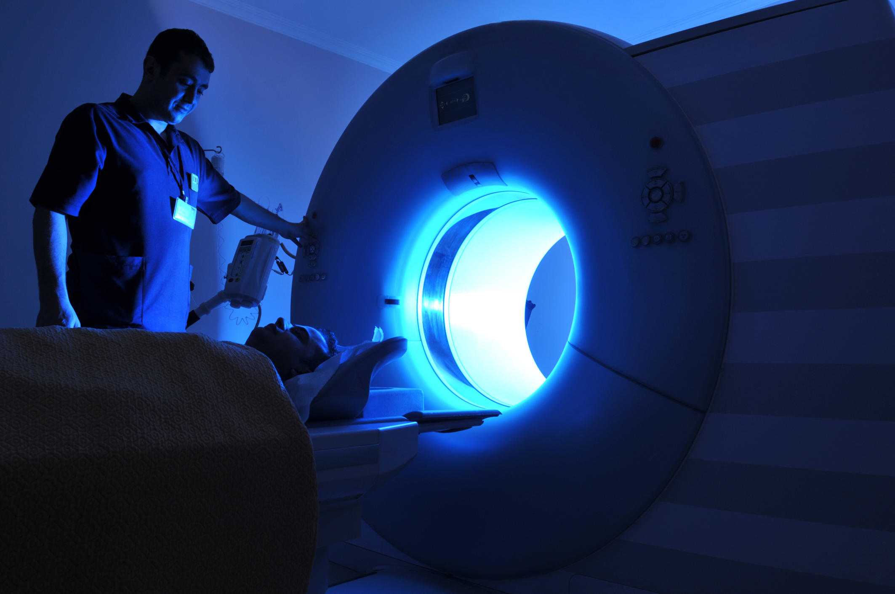

Deep Learning Project
Team members : Sakhile Naga Koti Reddy ,Sri Hari ,Abhishek Pal

We are , currently working on MRI K-Space Sampling problem under prof Dr. Aditya Nigam. ,School of Computing and Electrical Engineering, IIT Mandi
INTRODUCTION:
Magnetic resonance imaging (MRI), also known as nuclear magnetic resonance imaging, is a scanning technique for creating detailed images of the human body. The scan uses a strong magnetic field and radio waves to generate images of parts of the body that can't be seen as well with X-rays, CT scans or ultrasound. For example, it can help doctors to see inside joints, cartilage, ligaments, muscles and tendons, which makes it helpful for detecting various sports injuries. MRI is also used to examine internal body structures and diagnose a variety of disorders, such as strokes, tumors, aneurysms, spinal cord injuries, multiple sclerosis and eye or inner ear problems, according to the Mayo Clinic. It is also widely used in research to measure brain structure and function, among other things.